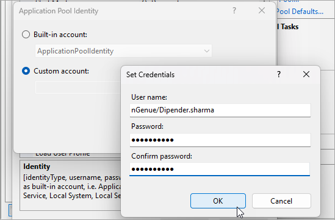

Install and configure Microsoft SQL Server Reporting Services (SSRS)¶
This document provides a comprehensive, step-by-step guide to setting up Microsoft SQL Server Reporting Services (SSRS). It covers the installation of SQLServerReportingServices.exe and the configuration of the report server using Report Server Configuration Manager. Additionally, you'll learn how to generate reports effectively, ensuring smooth integration with your SQL Server environment.
Install SQL Server Reporting Services¶
- Download the installer from the Microsoft Download Center here: Microsoft SQL Server 2019 Reporting Services.
- Run the SQLServerReportingServices.exe executable file to launch the setup wizard.
- On the setup wizard's first screen, select Install Reporting Services to begin the installation.

- If using a paid edition, enter a valid product key. Alternatively, select the Free Developer Edition radio button. Click Next to continue.
- Agree to the license terms by selecting the I accept the license terms checkbox. Click Next.
- You will be reminded that an installed SQL Server is required to configure the SSRS server. At this stage, you will see an option to install Reporting Services. Click Next.

- By default, SSRS installs on the "C:\" drive. You can change the installation directory if needed.
- Click Install to begin the installation process.

- Congratulations! The SSRS is successfully installed.
Configure the report server using Report Server Configuration Manager¶
Once SSRS is installed, it's time to complete some basic configurations before using it:
- Click Configure report server to open the Configuration Manager screen.

- The Report Servers Configuration Manager windows will display the installed SQL server instance.
- Verify the information is correct. Click Connect to establish a connection to the SSRS server.
-
In the Service Account window, configure the service account for reporting services.
- Choose between a built-in account or a custom account depending on your requirements.
- Click Apply to save settings.
Note
If the Apply button is disabled, select Use another account, then re-check Use built-in account.
-
In the Web Service URL window, the default TCP port is set to 80 (can be changed).
-
Click on the Database tab. Here, you create the databases ReportServer and ReportServerTempDB.
- Click Change Database to select or create a new database.
- To create a fresh installation of SSRS, leave the Create a new report server database radio button checked. Or, select the Choose an existing report server database radio button to point Reporting Services to an existing set of databases. Click Next.

- Before proceeding with database creation, it's a good idea to verify that the connection to the SQL Server is successful using your credentials. To do so, click Test Connection.

- If the connection is successful, click OK.

- Next, enter a name for your database.
- Keep the remaining fields as default. Click Next.
- In the Credentials window, keep the Authentication Type as Service Credentials.
-
Click Next.

-
In the Summary window, verify the information is correct before proceeding with the database creations. If everything looks good, click Next to proceed with the database creation.
- Ensure the steps shows Success in the Progress and Finish window. Once confirmed, click Finish to complete the database creation setup.
-
Go to the Web Portal URL window and click Apply. The SSRS will restart to apply the changes.
-
Verify the URL created:


You have now a fully functional SSRS installation that is ready to deploy reports.
Configuring the SQL Server Reporting Services¶
In this step, we'll upload the necessary files to SQL Server Reporting Services and configure them accordingly.
-
Download the following files to your local machine. These files will be available on a SharePoint site provided by your organization. Please contact the nGenue administrator to get the SharePoint link.
The required files are:
ReportAPI.zip, nTrackdatastructure.rds, settlementinvoice.rdl, andStyles.rsd. -
In the SSRS application, go to the Web Portal URL section.
-
Click on the Web Portal URL link. This will launch the default browser and take you to the Reporting Service homepage.
-
In the Reporting Service portal, go to New (+) > Folder and create the following folders:
-
Go to the DataSource folder and upload the
nTrackdatastructure.rdsfile. -
Now, configure the
nTrackdatastructure.rdsfile by doing the following:- Click on More info and choose Manage.

- Under the Connection tab, enter the following details in the Connection string field:
- Data Source: Provide your server instance name. If you’re unsure, you can find it on the SQL Server Management Studio (SSMS) login screen.
- Initial Catalog: Enter the target database name.

- In the Credentials tab, choose Windows user name and password.
- Enter your system username and password, then click Test connection to verify.
- If the connection is successful, click Apply to save the settings.
- Click on More info and choose Manage.
-
Return to the Home page.
- Navigate to the Datasets folder and upload the
styles.rdsfile. -
Configure the
styles.rdsfile: -
Go back to the Home page and open the Reports folder.
- Upload the
settlementinvoice.rdlfile. -
Configure the
settlementinvoice.rdlfile: -
Return to the Home page.
- Open the Reports folder and click on the uploaded
settlementinvoice.rdlfile. - Enter the required parameters to run the report.
- Click on View Report. The report should be generated successfully.


{kind=link}
{kind=link}
{kind=link}
{kind=link}
{kind=link}
{kind=link}
{kind=link}
{kind=link}
{kind=link}
{kind=link}
{kind=link}
{kind=link}
{kind=link}
{kind=link}
{kind=link}
{kind=link}
{kind=link}
Enable Microsoft Internet Information Services (IIS) components¶
nGenue requires that IIS and specific IIS components be enabled on supported Windows operating systems. The setup will not proceed if IIS is not detected and specific IIS components are not enabled.
To enable IIS and the required IIS components on Windows Server 2016, Windows Server 2019, and Windows Server 2022, complete the following steps:
- Open Control Panel and click Programs > Programs and Features > Turn Windows features on or off.
-
Enable the following services:
- .NET Framework 3.5 (includes .NET 2.0 and 3.0).
- Expand the .NET Framework 3.5 (includes .NET 2.0 and 3.0) feature and select all sub-options.
- Enable .NET Framework 4.8 Advanced Services feature and select all its sub-options.
- Enable Internet Information Services (IIS).
- Expand Internet Information Services (IIS) feature and select all available options.
- Similarly, enable Internet Information Services Hostable Web Core service.

- .NET Framework 3.5 (includes .NET 2.0 and 3.0).
-
Once all the required features are selected, click OK.
- Windows will apply the changes, and you may be prompted to restart your computer for the features to take effect.
{kind=link}
Add Report API folder to IIS¶
After you enable IIS and the required features, you will need to add the Report API folder to the IIS server. To do so, follow the below steps:
- Navigate to the IIS web root folder:
C:\inetpub\wwwroot - Copy the ReportAPI.zip file an save it in your desktop or preferred location. This file which can be found in the SharePoint foder shared by nGenue admin team previously (Refer step-1 under the Configuring the SQL Server Reporting Services section).
- Unzip the ReportAPI.zip file. Copy the ReportAPI folder.
- Now, go to
C:\inetpub\wwwroot.This is the default folder where IIS hosts its websites. - In the
wwwrootfolder, paste the ReportAPI folder you copied earlier.
IIS Manager configuration¶
To configure IIS:
- Run the IIS Manager by pressing the Windows key, type IIS, and select Internet Information Services (IIS) Manager from the search results.
- In the Connections pane, right-click the Sites node in the tree view, and then click Add Web Site.
- In the Add Web Site dialog box, type a friendly name for your Web site in the Web site name box. Example: Report API.
- In the Physical path box, type the physical path of the Web site's folder, or click the browse button (...) to browse the file system to find the folder.
- Type 5722 as the port number in the Port text box. This will ensure that the Report API is accessed through this specific port.
- After setting the port, click OK to complete the configuration.
{kind=link}
{kind=link}
Configure IIS Application Pools¶
To set up the IIS Application Pools:
- In the left navigation panel of IIS Manager, click on the Application Pools node.
- From the list of application pools, select Report API.
-
In the Actions pane, click Advanced Settings to open the pool's configuration window.
-
In the Advanced Settings window, scroll to Process Model > Identity to view more options.
-
Change the identity to Custom account, then click the Set button.

-
In the Set Credentials pop-up, enter your system username and password, then click OK.
 -
The identity should now reflect the username you provided.

-
Change the Load User Profile setting from True to False.
-
Also, change the Ping Enabled setting from True to False.

-
Click OK to save your updates.
{kind=link}
{kind=link}
{kind=link}
Configure web.config file¶
With IIS now configured, the next step is to update the web.config file so that the Report API can connect correctly to your database and report server.
- Navigate to the following path to find the
web.configfile: Local Disk (C:) > inetpub > wwwroot > Report API > Report API - Right-click on the
web.configfile and open it using Notepad++ (or any preferred text editor). -
Locate the
<connectionStrings>section and modify it with the following values:connectionString="Server=~<Your_server_instance_name>; Database=<Your_database_name>; User Id=<Your_system_username>; Password=<Your_system_password>"where:
<Your_server_instance_name>: Provide the name of your SQL server instance. Example: NGILAP0723063<Your_database_name>: Specify the target database name. Example: nGenueMainlineQA<Your_system_username>: Input your system username. Example: dipender.sharma<Your_system_password>: Input your system password.
-
Find the
<reportServerUrl>tag and replace its value with the Web Services URL listed in the Report Server Configuration Manager.


-
Save the changes to the
web.configfile.
{kind=link}
Browse the website¶
With the application pool settings configured, you can now restart the website and verify if the website is working.
- In the IIS Manager's left navigation tree, expand the Sites node and select Report API.
- Select Restart under the Actions pane. This will restart the site and apply all the changes.

- Browse the Report API website, by clicking on Browser *:5722 (http) link under Actions > Browser Website section.
- A web screen should open in your browser. This confirms that the Report API is now properly configured and running on port 5722.

{kind=link}
{kind=link}